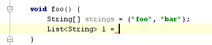
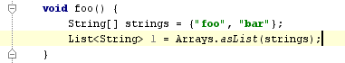

Pressing the same shortcut after you have invoked Smart-type Completion when a collection type is expected will search for arrays with same component type and suggest to convert them using Arrays.asList() call.

